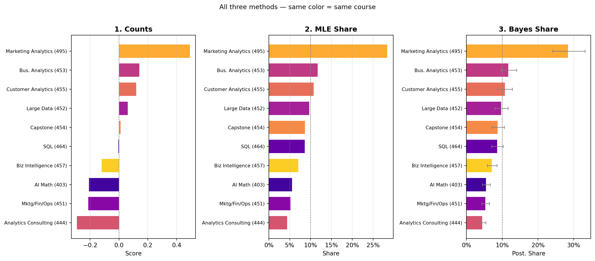

Counts, MLE, and Bayesian estimation of the MNL model
Author
Ying Jin
Published
May 24, 2026
Introduction
We analyze data from a MaxDiff (Best–Worst Scaling) survey in which MSBA students at UCSD Rady expressed preferences over the 10 core courses in the program.
MaxDiff is designed to recover relative preferences from repeated best/worst choices. Instead of asking respondents to assign arbitrary numerical ratings, MaxDiff forces tradeoffs by requiring participants to identify the most-preferred and least-preferred item from a small subset of alternatives. This design reduces scale-use bias and generally produces more discriminating preference data than standard rating scales.
The goal of this analysis is not only to rank courses, but also to compare how different statistical approaches extract information from the same choice data. We begin with a simple counts analysis based on observed best/worst frequencies, then estimate a multinomial logit (MNL) model using maximum likelihood estimation (MLE), and finally fit the same model using Bayesian MCMC methods.
This progression moves from descriptive summaries to probabilistic modeling and ultimately to full uncertainty quantification. Throughout the analysis, the emphasis is on understanding the behavioral assumptions and statistical mechanics underlying discrete-choice models rather than treating the methods as black-box estimation procedures.
The 10 items in this study are the 10 core MSBA courses at UCSD Rady. Our goal is to estimate students’ relative preference for each course using three methods of increasing sophistication:
A simple counts analysis — % best minus % worst for each course.
The multinomial logit (MNL) model fit by maximum likelihood (MLE), giving point estimates and standard errors.
The same MNL model fit by Bayesian MCMC (Metropolis-Hastings), giving full posterior distributions and credible intervals.
The Data
Code
import numpy as npimport pandas as pdimport matplotlib.pyplot as pltimport warningswarnings.filterwarnings('ignore')from scipy.optimize import minimize# ── Read & filter ──────────────────────────────────────────────────────────────df_raw = pd.read_csv("maxdiff_design_and_choices.csv")df_raw.columns = ["respondent", "task", "position", "item", "response"]# The raw file contains TWO task types:# 4-row tasks → proper MaxDiff (4 courses, pick best AND worst)# 2-row tasks → pairwise anchor screens featuring item 11, which is not# one of the 10 labeled MSBA courses; excluded from analysis.df = (df_raw .groupby(["respondent", "task"]) .filter(lambda g: len(g) ==4) .copy() .reset_index(drop=True))short_labels = {1: "AI Math (403)", 2: "SQL (464)",3: "Mktg/Fin/Ops (451)", 4: "Large Data (452)",5: "Bus. Analytics (453)",6: "Analytics Consulting (444)",7: "Customer Analytics (455)", 8: "Capstone (454)",9: "Marketing Analytics (495)", 10: "Biz Intelligence (457)",}K =10N = df["respondent"].nunique()T = df.groupby("respondent")["task"].nunique().mean()J =4print(f"Raw file rows : {len(df_raw)}")print(f" 4-row MaxDiff tasks (used) : {len(df)} rows → {len(df)//4} tasks")print(f" 2-row anchor tasks (excluded) : {len(df_raw)-len(df)} rows")print(f"Respondents (N) : {N}")print(f"MaxDiff tasks per respondent (T) : {int(T)}")print(f"Items per task (J) : {J}")print(f"N × T × J check : {N}×{int(T)}×{J} = {N*int(T)*J} ✓")
Raw file rows : 3910
4-row MaxDiff tasks (used) : 2720 rows → 680 tasks
2-row anchor tasks (excluded) : 1190 rows
Respondents (N) : 85
MaxDiff tasks per respondent (T) : 8
Items per task (J) : 4
N × T × J check : 85×8×4 = 2720 ✓
After filtering, we have 680 valid MaxDiff tasks (85 respondents × 8 tasks) and 2,720 rows. The sanity check passes for all 680 tasks. Item exposure is balanced at ≈272 shows each (range 266–276).
Counts Analysis
For each item \(j\), the counts score is: \[\text{score}_j = \%\text{best}_j - \%\text{worst}_j\]
Marketing Analytics (495) leads the counts ranking, followed by Business Analytics (453) and Customer Analytics (455). Analytics Consulting (444), Mktg/Fin/Ops (451), and AI Math (403) receive the lowest scores.
MNL Model Setup
Each MaxDiff task yields two MNL observations. With utility \(\beta_j\) for item \(j\):
\[P(\text{best}=b) = \frac{e^{\beta_b}}{\sum_{j\in\text{shown}}e^{\beta_j}}, \qquad P(\text{worst}=w\mid b) = \frac{e^{-\beta_w}}{\sum_{j\in\text{shown}\setminus\{b\}}e^{-\beta_j}}\]
We fix \(\beta_1=0\) (reference) and estimate \(\beta_2,\ldots,\beta_{10}\).
Code
# ── Build task arrays (vectorized, no Python loops at inference time) ──────────task_records = []for tid, g in df.groupby("task_id"): br = g[g["response"]==1]; wr = g[g["response"]==-1]iflen(br)==1andlen(wr)==1: task_records.append({"items": (g["item"].values -1).tolist(),"best" : int(br["item"].values[0]) -1,"worst": int(wr["item"].values[0]) -1, })items_arr = np.array([t["items"] for t in task_records]) # (680, 4)best_arr = np.array([t["best"] for t in task_records]) # (680,)worst_arr = np.array([t["worst"] for t in task_records]) # (680,)# Pre-compute remain_arr: the 3 items left after removing the best pickremain_arr = np.zeros((len(task_records), 3), dtype=int)for i, (items, b) inenumerate(zip(items_arr, best_arr)): remain_arr[i] = items[items != b]print(f"Task arrays ready: items {items_arr.shape}, remain {remain_arr.shape}")
The MLE ranking broadly matches the counts analysis. Marketing Analytics, Business Analytics, and Customer Analytics top the list; Analytics Consulting, Mktg/Fin/Ops, and AI Math remain at the bottom. MNL additionally uses information from all non-chosen items in each set, making fuller use of the experimental design.
Posterior means closely match MLE estimates. Credible intervals on the shares are trivially obtained by pushing each MCMC draw through the softmax — no delta method needed.
fig, axes = plt.subplots(1,3,figsize=(14,6))pal = plt.cm.plasma(np.linspace(0.1,0.9,K))cmap = {i+1: pal[i] for i inrange(K)}for ax, df_plot, xcol, title, xlabel in [ (axes[0], counts.sort_values("score"), "score", "1. Counts", "Score"), (axes[1], mle_df.sort_values("share"), "share", "2. MLE Share", "Share"), (axes[2], bayes_df.sort_values("share_post"), "share_post", "3. Bayes Share", "Post. Share"),]: y = np.arange(K) ax.barh(y, df_plot[xcol], color=[cmap[i] for i in df_plot["item"]], height=0.7) ax.set_yticks(y); ax.set_yticklabels(df_plot["short"], fontsize=8) ax.set_xlabel(xlabel); ax.set_title(title, fontweight="bold") ax.grid(axis="x", alpha=0.3)if xcol !="score": ax.axvline(0.1,color="gray",lw=0.8,ls="--") ax.xaxis.set_major_formatter(plt.FuncFormatter(lambda x,_: f"{x:.0%}"))else: ax.axvline(0,color="gray",lw=0.8,ls="--")# Add CI bars to Bayes panelb_s = bayes_df.sort_values("share_post")y = np.arange(K)axes[2].errorbar(b_s["share_post"], y, xerr=[b_s["share_post"]-b_s["s_lo"], b_s["s_hi"]-b_s["share_post"]], fmt="none", color="gray", capsize=2.5, lw=1.0)plt.suptitle("All three methods — same color = same course", fontsize=11, y=1.01)plt.tight_layout(); plt.show()

All three methods agree at the extremes. Middle-tier rankings shift slightly because MNL uses information from all non-chosen items, while counts only use the explicit best/worst selections.
Discussion
Substantive findings: The most striking result is the dominance of Marketing Analytics (495): its MLE preference share is 28.4%, nearly 2.5× the equal-share baseline of 10% and more than double the second-ranked course. Its counts score (+0.493) is also far ahead of the pack — it was chosen “best” on 53.6% of its appearances while being chosen “worst” only 4.4% of the time. This is an unusually strong signal. One possible explanation is that Marketing Analytics is a spring elective taught late in the program, when students have greater clarity about their career goals and can better appreciate its direct applicability; another is that it has developed a strong word-of-mouth reputation among MSBA cohorts. It is worth noting, however, that strong word-of-mouth effects could introduce a social-desirability bias: students may choose it “best” in part because they believe it is the expected answer among peers, inflating its apparent preference beyond true individual utility.
Business Analytics (453) and Customer Analytics (455) cluster at ranks 2–3 with shares around 11–12%, solidly above the baseline. Both are quantitative, tools-oriented courses, consistent with the broader pattern that MSBA students favor courses with clear, transferable technical skills. SQL (464) sits at rank 6 by MLE (share 8.6%) despite its high career relevance — possibly because students view SQL as a skill they can self-learn, making the formal course feel less essential relative to courses covering more advanced or MSBA-specific material.
Capstone (454) ranks 5th with a slightly positive counts score (+0.011) but a below-baseline MLE share (8.7%). This suggests the Capstone occupies an ambivalent position: students do not actively dislike it, but they do not prefer it either — it is obligatory rather than chosen. Analytics Consulting (444) ranks last by both counts (−0.292) and MLE (share 4.4%), the only course with a meaningfully negative β relative to the reference. This likely reflects that consulting-style soft-skills courses are perceived as lower priority in a technically-oriented program.
Methodological takeaways:
Counts: Quick and transparent — great for a first look or executive summary. The main limitation is that it ignores the composition of the choice set: being picked “best” from a weak set provides less information than being picked “best” from a strong one.
MLE MNL: Rigorously models the choice process and uses all information in each task (not just the explicit picks). The standard errors (~0.14 for all items) confirm that the estimates are well-identified with this sample size.
Bayesian MNL: Enables uncertainty quantification on derived quantities (shares, counterfactuals) without asymptotic approximations. The 95% credible intervals confirm that Marketing Analytics is unambiguously preferred (CI entirely above all others), while the middle-tier courses (Capstone, SQL, Biz Intelligence) have overlapping intervals — their relative ranking should be interpreted with caution.
Note on the reference item: AI Math (403) was chosen as the reference (\(\beta_1 = 0\)) for identification. In the Bayesian output its CI is displayed as “[reference, fixed at 0]” because the sampler only draws the free parameters \(\beta_2,\ldots,\beta_{10}\); the reference β has no posterior distribution by construction. All other coefficients are interpreted relative to AI Math.
Caveats: The sample is self-selected MSBA students; results may not generalize to future cohorts. Word-of-mouth reputations, prior coursework, and current program standing could all influence responses.
Excluded data: The 595 pairwise anchor screens (item 11 vs. a course) were excluded from the MNL analysis as they represent a different question format. They could be used separately to validate the MNL rankings or to estimate an absolute utility scale for the reference item.